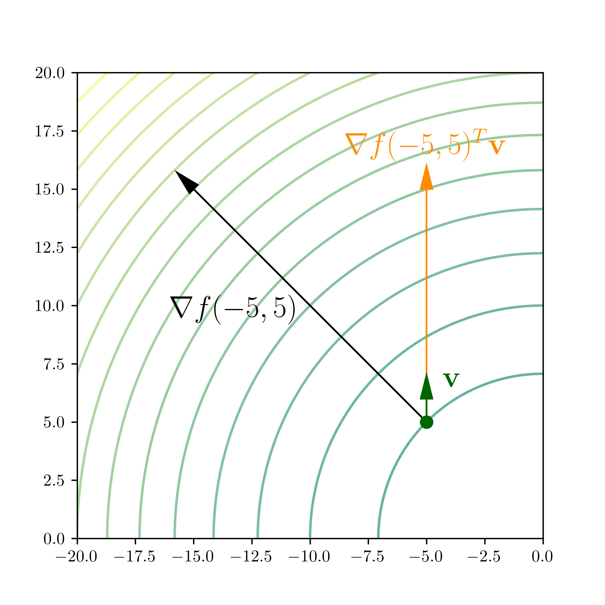

\(\newcommand{\bmu}{\boldsymbol{\mu}}\) \(\newcommand{\bSigma}{\boldsymbol{\Sigma}}\) \(\newcommand{\bfbeta}{\boldsymbol{\beta}}\) \(\newcommand{\bflambda}{\boldsymbol{\lambda}}\) \(\newcommand{\bgamma}{\boldsymbol{\gamma}}\) \(\newcommand{\bsigma}{{\boldsymbol{\sigma}}}\) \(\newcommand{\bpi}{\boldsymbol{\pi}}\) \(\newcommand{\btheta}{{\boldsymbol{\theta}}}\) \(\newcommand{\bphi}{\boldsymbol{\phi}}\) \(\newcommand{\balpha}{\boldsymbol{\alpha}}\) \(\newcommand{\blambda}{\boldsymbol{\lambda}}\) \(\renewcommand{\P}{\mathbb{P}}\) \(\newcommand{\E}{\mathbb{E}}\) \(\newcommand{\indep}{\perp\!\!\!\perp} \newcommand{\bx}{\mathbf{x}}\) \(\newcommand{\bp}{\mathbf{p}}\) \(\renewcommand{\bx}{\mathbf{x}}\) \(\newcommand{\bX}{\mathbf{X}}\) \(\newcommand{\by}{\mathbf{y}}\) \(\newcommand{\bY}{\mathbf{Y}}\) \(\newcommand{\bz}{\mathbf{z}}\) \(\newcommand{\bZ}{\mathbf{Z}}\) \(\newcommand{\bw}{\mathbf{w}}\) \(\newcommand{\bW}{\mathbf{W}}\) \(\newcommand{\bv}{\mathbf{v}}\) \(\newcommand{\bV}{\mathbf{V}}\) \(\newcommand{\bfg}{\mathbf{g}}\) \(\newcommand{\bfh}{\mathbf{h}}\) \(\newcommand{\horz}{\rule[.5ex]{2.5ex}{0.5pt}}\) \(\renewcommand{\S}{\mathcal{S}}\) \(\newcommand{\X}{\mathcal{X}}\) \(\newcommand{\var}{\mathrm{Var}}\) \(\newcommand{\pa}{\mathrm{pa}}\) \(\newcommand{\Z}{\mathcal{Z}}\) \(\newcommand{\bh}{\mathbf{h}}\) \(\newcommand{\bb}{\mathbf{b}}\) \(\newcommand{\bc}{\mathbf{c}}\) \(\newcommand{\cE}{\mathcal{E}}\) \(\newcommand{\cP}{\mathcal{P}}\) \(\newcommand{\bbeta}{\boldsymbol{\beta}}\) \(\newcommand{\bLambda}{\boldsymbol{\Lambda}}\) \(\newcommand{\cov}{\mathrm{Cov}}\) \(\newcommand{\bfk}{\mathbf{k}}\) \(\newcommand{\idx}[1]{}\) \(\newcommand{\xdi}{}\)
3.3. Optimality conditions#
In this section, we derive optimality conditions for unconstrained continuous optimization problems.
We will be interested in unconstrained optimization of the form:
where \(f : \mathbb{R}^d \to \mathbb{R}\). In this subsection, we define several notions of solution and derive characterizations.
We have observed before that, in general, finding a global minimizer and certifying that one has been found can be difficult unless some special structure is present. Therefore weaker notions of solution are needed. We previously introduced the concept of a local minimizer. In words, \(\mathbf{x}^*\) is a local minimizer if there is open ball around \(\mathbf{x}^*\) where it attains the minimum value. The difference between global and local minimizers is illustrated in the next figure.
3.3.1. First-order conditions#
Local minimizers can be characterized in terms of the gradient. We first define the concept of directional derivative.
Directional derivative Partial derivatives measure the rate of change of a function along the axes. More generally:
DEFINITION (Directional Derivative) \(\idx{directional derivative}\xdi\) Let \(f : D \to \mathbb{R}\) where \(D \subseteq \mathbb{R}^d\), let \(\mathbf{x}_0 = (x_{0,1},\ldots,x_{0,d}) \in D\) be an interior point of \(D\) and let \(\mathbf{v} = (v_1,\ldots,v_d) \in \mathbb{R}^d\) be a nonzero vector. The directional derivative of \(f\) at \(\mathbf{x}_0\) in the direction \(\mathbf{v}\) is
provided the limit exists. \(\natural\)
Typically, \(\mathbf{v}\) is a unit vector.
Note that taking \(\mathbf{v} = \mathbf{e}_i\) recovers the \(i\)-th partial derivative
Conversely, a general directional derivative can be expressed in terms of the partial derivatives.
THEOREM (Directional Derivative and Gradient) \(\idx{directional derivative and gradient theorem}\xdi\) Let \(f : D \to \mathbb{R}\) where \(D \subseteq \mathbb{R}^d\), let \(\mathbf{x}_0 \in D\) be an interior point of \(D\) and let \(\mathbf{v} \in \mathbb{R}^d\) be a vector. Assume that \(f\) is continuously differentiable at \(\mathbf{x}_0\). Then the directional derivative of \(f\) at \(\mathbf{x}_0\) in the direction \(\mathbf{v}\) is given by
\(\sharp\)
Put differently, when \(\mathbf{v}\) is a unit vector, the directional derivative is the length of the orthogonal projection of the gradient onto \(\mathbf{v}\).
Proof idea: To bring out the partial derivatives, we re-write the directional derivative as the derivative of a composition of \(f\) with an affine function. We then use the Chain Rule.
Proof: Consider the composition \(\beta(h) = f(\boldsymbol{\alpha}(h))\) where \(\boldsymbol{\alpha}(h) = \mathbf{x}_0 + h \mathbf{v}\). Observe that \(\boldsymbol{\alpha}(0)= \mathbf{x}_0\) and \(\beta(0)= f(\mathbf{x}_0)\). Then, by definition of the derivative,
Applying the Chain Rule and the parametric line example from the previous section, we arrive at
\(\square\)

KNOWLEDGE CHECK: Let \(f : \mathbb{R}^2 \to \mathbb{R}\) be continuously differentiable. Suppose that
where \(\mathbf{v} = (1,2)/\sqrt{5}\) and \(\mathbf{w} = (2,1)/\sqrt{5}\). Compute the gradient of \(f\) at \(\mathbf{x}_0\). \(\checkmark\)
Descent direction Earlier in the book, we proved a key insight about the derivative of a single-variable function \(f\) at a point \(x_0\): it tells us where to find smaller values. We generalize the Descent Direction Lemma to the multivariable case.
First, we observe that in the continuously differentiable case the directional derivative gives a criterion for descent directions.
LEMMA (Descent Direction and Directional Derivative) \(\idx{descent direction and directional derivative lemma}\xdi\) Let \(f : \mathbb{R}^d \to \mathbb{R}\) be continuously differentiable at \(\mathbf{x}_0\). A vector \(\mathbf{v}\) is a descent direction for \(f\) at \(\mathbf{x}_0\) if
that is, if the directional derivative of \(f\) at \(\mathbf{x}_0\) in the direction \(\mathbf{v}\) is negative. \(\flat\)
Proof idea: In anticipation of the proof of the second-order condition, we use the Mean Value Theorem to show that \(f\) takes smaller values in direction \(\mathbf{v}\). A simpler proof based on the definition of the directional derivative is also possible (Try it!).
Proof: Suppose there is \(\mathbf{v} \in \mathbb{R}^d\) such that \(\nabla f(\mathbf{x}_0)^T \mathbf{v} = -\eta < 0\). For \(\alpha > 0\), the Mean Value Theorem implies that there is \(\xi_\alpha \in (0,1)\) such that
We want to show that the second term on the right-hand side is negative. We cannot immediately apply our condition on \(\mathbf{v}\) as the gradient in the previous equation is taken at \(\mathbf{x}_0 + \xi_\alpha \alpha \mathbf{v}\), not \(\mathbf{x}_0\).
The gradient is continuous (in the sense that all its components are continuous). In particular, the function \(\nabla f(\mathbf{x})^T \mathbf{v}\) is continuous as a linear combination of continuous functions. By the definition of continuity, for any \(\epsilon > 0\) – say \(\epsilon = \eta/2\) – there is \(\delta > 0\) small enough such that all \(\mathbf{x} \in B_\delta(\mathbf{x}_0)\) satisfy
Take \(\alpha^* > 0\) small enough that \(\mathbf{x}_0 + \alpha^* \mathbf{v} \in B_\delta(\mathbf{x}_0)\). Then, for all \(\alpha \in (0,\alpha^*)\), whatever \(\xi_\alpha \in (0,1)\) is, it holds that \(\mathbf{x}_0 + \xi_\alpha \alpha \mathbf{v} \in B_\delta(\mathbf{x}_0)\). Hence,
by definition of \(\eta\). That implies
and proves the claim. \(\square\)
LEMMA (Descent Direction) \(\idx{descent direction lemma}\xdi\) Let \(f : \mathbb{R}^d \to \mathbb{R}\) be continuously differentiable at \(\mathbf{x}_0\) and assume that \(\nabla f(\mathbf{x}_0) \neq 0\). Then \(f\) has a descent direction at \(\mathbf{x}_0\). \(\flat\)
Proof: Take \(\mathbf{v} = - \nabla f(\mathbf{x}_0)\). Then \(\nabla f(\mathbf{x}_0)^T \mathbf{v} = - \|\nabla f(\mathbf{x}_0)\|^2 < 0\) since \(\nabla f(\mathbf{x}_0) \neq \mathbf{0}\). \(\square\)
This leads to the following fundamental result.
THEOREM (First-Order Necessary Optimality Condition) \(\idx{first-order necessary optimality condition}\xdi\) Let \(f : \mathbb{R}^d \to \mathbb{R}\) be continuously differentiable on \(\mathbb{R}^d\). If \(\mathbf{x}_0\) is a local minimizer, then \(\nabla f(\mathbf{x}_0) = \mathbf{0}\). \(\sharp\)
Proof idea: In a descent direction, \(f\) decreases hence there cannot be one at a local minimizer.
Proof: We argue by contradiction. Suppose that \(\nabla f(\mathbf{x}_0) \neq 0\). By the Descent Direction Lemma, there is a descent direction \(\mathbf{v} \in \mathbb{R}^d\) at \(\mathbf{x}_0\). That implies
for some \(\alpha^* > 0\). So every open ball around \(\mathbf{x}_0\) has a point achieving a smaller value than \(f(\mathbf{x}_0)\). Thus \(\mathbf{x}_0\) is not a local minimizer, a contradiction. So it must be that \(\nabla f(\mathbf{x}_0) = \mathbf{0}\). \(\square\)
A point satisfying the first-order necessary conditions is called a stationary point.
DEFINITION (Stationary Point) \(\idx{stationary point}\xdi\) Let \(f : D \to \mathbb{R}\) be continuously differentiable on an open set \(D \subseteq \mathbb{R}^d\). If \(\nabla f(\mathbf{x}_0) = \mathbf{0}\), we say that \(\mathbf{x}_0 \in D\) is a stationary point of \(f\). \(\natural\)
EXAMPLE: (Rayleight Quotient) Let \(A \in \mathbb{R}^{d \times d}\) be a symmetric matrix. The associated Rayleigh quotient\(\idx{Rayleigh quotient}\xdi\) is
which is defined for any \(\mathbf{u} = (u_1,\ldots,u_d) \neq \mathbf{0}\) in \(\mathbb{R}^{d}\). As a function from \(\mathbb{R}^{d} \setminus \{\mathbf{0}\}\) to \(\mathbb{R}\), \(\mathcal{R}_A(\mathbf{u})\) is continuously differentiable. We find its stationary points.
We use the quotient rule and our previous results on the gradient of quadratic functions. Specifically, note that (using that \(A\) is symmetric)
In vector form this is
The stationary points satisfy \(\nabla \mathcal{R}_A(\mathbf{u}) = \mathbf{0}\), or after getting rid of the denominator and rearranging,
The solutions to this system are eigenvectors of \(A\), that is, they satisfy \(A\mathbf{u} = \lambda \mathbf{u}\) for some eigenvalue \(\lambda\). If \(\mathbf{q}_i\) is a unit eigenvector of \(A\) with eigenvalue \(\lambda_i\), then we have that \(\mathcal{R}_A(\mathbf{q}_i) = \lambda_i\) (Check it!) and
The eigenvectors of \(A\) are not in general local minimizers of its Rayleigh quotient. In fact one of them – the largest one – is a global maximizer! \(\lhd\)
3.3.2. Second-order conditions#
Local minimizers can also be characterized in terms of the Hessian.
We will make use of Taylor’s Theorem, a generalization of the Mean Value Theorem that provides polynomial approximations to a function around a point. We restrict ourselves to the case of a linear approximation with second-order error term, which will suffice for our purposes.
Taylor’s theorem We begin by reviewing the single-variable case, which we will use to prove the general verison.
THEOREM (Taylor) \(\idx{Taylor's theorem}\xdi\) Let \(f: D \to \mathbb{R}\) where \(D \subseteq \mathbb{R}\). Suppose \(f\) has a continuous derivative on \([a,b]\) and that its second derivative exists on \((a,b)\). Then for any \(x \in [a, b]\)
for some \(a < \xi < x\). \(\sharp\)
The third term on the right-hand side of Taylor’s Theorem is called the Lagrange remainder. It can be seen as an error term between \(f(x)\) and the linear approximation \(f(a) + (x-a) f'(a)\). There are other forms for the remainder. The form we stated here is useful when one has a bound on the second derivative. Here is an example.
NUMERICAL CORNER: Consider \(f(x) = e^x\). Then \(f'(x) = f''(x) = e^x\). Suppose we are interested in approximating \(f\) in the interval \([0,1]\). We take \(a=0\) and \(b=1\) in Taylor’s Theorem. The linear term is
Then for any \(x \in [0,1]\)
where \(\xi_x \in (0,1)\) depends on \(x\). We get a uniform bound on the error over \([0,1]\) by replacing \(\xi_x\) with its worst possible value over \([0,1]\)
x = np.linspace(0,1,100)
y = np.exp(x)
taylor = 1 + x
err = (np.exp(1)/2) * x**2
If we plot the upper and lower bounds, we see that \(f\) indeed falls within them.
plt.plot(x,y,label='f')
plt.plot(x,taylor,label='taylor')
plt.plot(x,taylor-err,linestyle=':',color='green',label='lower')
plt.plot(x,taylor+err,linestyle='--',color='green',label='upper')
plt.legend()
plt.show()
\(\unlhd\)
In the case of several variables, we again restrict ourselves to the second order. For the more general version, see e.g. Wikipedia.
THEOREM (Taylor) \(\idx{Taylor's theorem}\xdi\) Let \(f : D \to \mathbb{R}\) where \(D \subseteq \mathbb{R}^d\). Let \(\mathbf{x}_0 \in D\) and \(\delta > 0\) be such that \(B_\delta(\mathbf{x}_0) \subseteq D\). If \(f\) is twice continuously differentiable on \(B_\delta(\mathbf{x}_0)\), then for any \(\mathbf{x} \in B_\delta(\mathbf{x}_0)\)
for some \(\xi \in (0,1)\). \(\sharp\)
As in the single-variable case, we think of \(f(\mathbf{x}_0) + \nabla f(\mathbf{x}_0)^T (\mathbf{x} - \mathbf{x}_0)\) for fixed \(\mathbf{x}_0\) as a linear – or more accurately affine – approximation to \(f\) at \(\mathbf{x}_0\). The third term on the right-hand side above quantifies the error of this approximation.
Proof idea: We apply the single-variable result to \(\phi(t) = f(\boldsymbol{\alpha}(t))\). We use the Chain Rule to compute the needed derivatives.
Proof: Let \(\mathbf{p} = \mathbf{x} - \mathbf{x}_0\) and \(\phi(t) = f(\boldsymbol{\alpha}(t))\) where \(\boldsymbol{\alpha}(t) = \mathbf{x}_0 + t \mathbf{p}\). Observe that \(\phi(0) = f(\mathbf{x}_0)\) and \(\phi(1) = f(\mathbf{x})\). As observed in the proof of the Mean Value Theorem, \(\phi'(t) = \nabla f(\boldsymbol{\alpha}(t))^T \mathbf{p}\). By the Chain Rule and our previous Parametric Line Example,
In particular, \(\phi\) has continuous first and second derivatives on \([0,1]\).
By Taylor’s Theorem in the single-variable case
for some \(\xi \in (0,t)\). Plugging in the expressions for \(\phi(0)\), \(\phi'(0)\) and \(\phi''(\xi)\) and taking \(t=1\) gives the claim. \(\square\)
EXAMPLE: Consider the function \(f(x_1, x_2) = x_1 x_2 + x_1^2 + e^{x_1} \cos x_2\). We apply Taylor’s Theorem with \(\mathbf{x}_0 = (0, 0)\) and \(\mathbf{x} = (x_1, x_2)\). The gradient is
and the Hessian is
So \(f(0,0) = 1\) and \(\nabla f(0,0) = (1, 0)\). Thus, by Taylor’s Theorem, there is \(\xi \in (0,1)\) such that
\(\lhd\)
Second directional derivative To control the error term in Taylor’s Theorem, it will be convenient to introduce a notion of second directional derivative.
DEFINITION (Second Directional Derivative) \(\idx{second directional derivative}\xdi\) Let \(f : D \to \mathbb{R}\) where \(D \subseteq \mathbb{R}^d\), let \(\mathbf{x}_0 \in D\) be an interior point of \(D\) and let \(\mathbf{v} \in \mathbb{R}^d\) be a nonzero vector. The second directional derivative of \(f\) at \(\mathbf{x}_0\) in the direction \(\mathbf{v}\) is
provided the limit exists. \(\natural\)
Typically, \(\mathbf{v}\) is a unit vector.
THEOREM (Second Directional Derivative and Hessian) \(\idx{second directional derivative and Hessian theorem}\xdi\) Let \(f : D \to \mathbb{R}\) where \(D \subseteq \mathbb{R}^d\), let \(\mathbf{x}_0 \in D\) be an interior point of \(D\) and let \(\mathbf{v} \in \mathbb{R}^d\) be a vector. Assume that \(f\) is twice continuously differentiable at \(\mathbf{x}_0\). Then the second directional derivative of \(f\) at \(\mathbf{x}_0\) in the direction \(\mathbf{v}\) is given by
\(\sharp\)
Note the similarity to the quadratic term in Taylor’s Theorem.
Proof idea: We have already done this calculation in the proof of Taylor’s Theorem.
Proof: Then, by definition of the derivative,
where \(g_i(\mathbf{x}_0) = \frac{\partial f(\mathbf{x}_0)}{\partial x_i}\). So
by the Directional Derivative and Gradient Theorem. Plugging back above we get
\(\square\)
So going back to Taylor’s Theorem
we see that the second term on the right-hand side is the directional derivative at \(\mathbf{x}_0\) in the direction \(\mathbf{x} - \mathbf{x}_0\) and that the third term is half of the second directional derivative at \(\mathbf{x}_0 + \xi (\mathbf{x} - \mathbf{x}_0)\) in the same direction.
Necessary condition When \(f\) is twice continuously differentiable, we get a necessary condition based on the Hessian.
THEOREM (Second-Order Necessary Optimality Condition) \(\idx{second-order necessary optimality condition}\xdi\) Let \(f : \mathbb{R}^d \to \mathbb{R}\) be twice continuously differentiable on \(\mathbb{R}^d\). If \(\mathbf{x}_0\) is a local minimizer, then \(\nabla f(\mathbf{x}_0) = \mathbf{0}\) and \(\mathbf{H}_f(\mathbf{x}_0)\) is positive semidefinite. \(\sharp\)
Proof idea: By Taylor’s Theorem and the First-Order Necessary Optimality Condition,
If \(\mathbf{H}_f\) is positive semidefinite in a neighborhood around \(\mathbf{x}_0\), then the second term on the right-hand side is nonnegative, which is necessary for \(\mathbf{x}_0\) to be a local minimizer. Formally we argue by contradiction: indeed, if \(\mathbf{H}_f\) is not positive semidefinite, then there must exists a direction in which the second directional derivative is negative; since the gradient is \(\mathbf{0}\) at \(\mathbf{x}_0\), intuitively the directional derivative must become negative in that direction as well and the function must decrease.
Proof: We argue by contradiction. Suppose that \(\mathbf{H}_f(\mathbf{x}_0)\) is not positive semidefinite. By definition, there must be a unit vector \(\mathbf{v}\) such that
That is, \(\mathbf{v}\) is a direction in which the second directional derivative is negative.
For \(\alpha > 0\), Taylor’s Theorem implies that there is \(\xi_\alpha \in (0,1)\) such that
where we used \(\nabla f(\mathbf{x}_0) = \mathbf{0}\) by the First-Order Necessary Optimality Condition. We want to show that the second term on the right-hand side is negative.
The Hessian is continuous (in the sense that all its entries are continuous functions of \(\mathbf{x}\)). In particular, the second directional derivative \(\mathbf{v}^T \mathbf{H}_f(\mathbf{x}) \,\mathbf{v}\) is continuous as a linear combination of continuous functions. So, by definition of continuity, for any \(\epsilon > 0\) – say \(\epsilon = \eta/2\) – there is \(\delta > 0\) small enough that
for all \(\mathbf{x} \in B_\delta(\mathbf{x}_0)\).
Take \(\alpha^* > 0\) small enough that \(\mathbf{x}_0 + \alpha^* \mathbf{v} \in B_\delta(\mathbf{x}_0)\). Then, for all \(\alpha \in (0,\alpha^*)\), whatever \(\xi_\alpha \in (0,1)\) is, it holds that \(\mathbf{x}_0 + \xi_\alpha \alpha \mathbf{v} \in B_\delta(\mathbf{x}_0)\). Hence,
by definition of \(\eta\). That implies
Since this holds for all sufficiently small \(\alpha\), every open ball around \(\mathbf{x}_0\) has a point achieving a lower value than \(f(\mathbf{x}_0)\). Thus \(\mathbf{x}_0\) is not a local minimizer, a contradiction. So it must be that \(\mathbf{H}_f(\mathbf{x}_0) \succeq \mathbf{0}\). \(\square\)
Sufficient condition The necessary condition above is not in general sufficient, as the following example shows.
NUMERICAL CORNER: Let \(f(x) = x^3\). Then \(f'(x) = 3 x^2\) and \(f''(x) = 6 x\) so that \(f'(0) = 0\) and \(f''(0) \geq 0\). Hence \(x=0\) is a stationary point. But \(x=0\) is not a local minimizer. Indeed \(f(0) = 0\) but, for any \(\delta > 0\), \(f(-\delta) < 0\).
x = np.linspace(-2,2,100)
y = x**3
plt.plot(x,y, c='k')
plt.ylim(-5,5)
plt.show()
\(\unlhd\)
We give sufficient conditions for a point to be a local minimizer.
THEOREM (Second-Order Sufficient Optimality Condition) \(\idx{second-order sufficient optimality condition}\xdi\) Let \(f : \mathbb{R}^d \to \mathbb{R}\) be twice continuously differentiable on \(\mathbb{R}^d\). If \(\nabla f(\mathbf{x}_0) = \mathbf{0}\) and \(\mathbf{H}_f(\mathbf{x}_0)\) is positive definite, then \(\mathbf{x}_0\) is a strict local minimizer. \(\sharp\)
Proof idea: We use Taylor’s Theorem again. This time we use the positive definiteness of the Hessian to bound the value of the function from below.
We will need a lemma.
LEMMA (Quadratic Form and Frobenius Norm) \(\idx{quadratic form and Frobenius norm lemma}\xdi\) Let \(A = (a_{i,j})_{i,j}\) and \(B = (b_{i,j})_{i,j}\) be matrices in \(\mathbb{R}^{n \times m}\). For any unit vectors \(\mathbf{u} \in \mathbb{R}^n\) and \(\mathbf{v} \in \mathbb{R}^m\)
\(\flat\)
Proof: By the Cauchy-Schwarz inequality,
where we used that \(\mathbf{u}\) and \(\mathbf{v}\) have unit norm on the last line. \(\square\)
Proof: (Second-Order Sufficient Optimality Condition) By Taylor’s Theorem, for all unit vectors \(\mathbf{v} \in \mathbb{R}^d\) and \(\alpha \in \mathbb{R}\), there is \(\xi_{\alpha} \in (0,1)\) such that
where we used that \(\nabla f(\mathbf{x}_0) = \mathbf{0}\). The second term on the last line is \(0\) at \(\mathbf{v} = \mathbf{0}\). Our goal is to show that it is strictly positive (except at \(\mathbf{0}\)) in a neighborhood of \(\mathbf{0}\).
The set \(\mathbb{S}^{d-1}\) of unit vectors in \(\mathbb{R}^d\) is closed and bounded. The expression \(\mathbf{v}^T \mathbf{H}_f(\mathbf{x}_0) \,\mathbf{v}\), viewed as a function of \(\mathbf{v}\), is continuous since it is a polynomial. Hence, by the Extreme Value Theorem, it attains its minimum on \(\mathbb{S}^{d-1}\). By our assumption that \(\mathbf{H}_f(\mathbf{x}_0)\) is positive definite, that minimum must be strictly positive, say \(\mu > 0\).
By the Quadratic Form and Frobenius Norm Lemma (ignoring the absolute value),
The Frobenius norm above is continuous in \(\mathbf{w}\) as a composition of continuous functions. Moreover, we have at \(\mathbf{w} = \mathbf{0}\) that this Frobenius norm is \(0\). Hence, by definition of continuity, for any \(\epsilon > 0\) – say \(\epsilon := \mu/2\) – there is \(\delta > 0\) such that \(\mathbf{w} \in B_{\delta}(\mathbf{0})\) implies \(\|\mathbf{H}_f(\mathbf{x}_0) - \mathbf{H}_f(\mathbf{x}_0 + \mathbf{w})\|_F < \epsilon = \mu/2\).
Since \(\mathbf{v}^T \mathbf{H}_f(\mathbf{x}_0) \,\mathbf{v} > \mu\), the inequality in the previous display implies that
This holds for any unit vector \(\mathbf{v}\) and any \(\mathbf{w} \in B_{\delta}(\mathbf{0})\).
Going back to our Taylor expansion, for \(\alpha > 0\) small enough (not depending on \(\mathbf{v}\)), it holds that \(\mathbf{w} = \xi_\alpha \alpha \mathbf{v} \in B_{\delta}(\mathbf{0})\) so that we get from the previous inequality
Therefore \(\mathbf{x}_0\) is a strict local minimizer. \(\square\)
3.3.3. Adding equality constraints#
Until now, we have considered unconstrained optimization problems, that is, the variable \(\mathbf{x}\) can take any value in \(\mathbb{R}^d\). However, it is common to impose conditions on \(\mathbf{x}\). Hence, we consider the constrained\(\idx{constrained optimization}\xdi\) minimization problem
where \(\mathscr{X} \subset \mathbb{R}^d\).
EXAMPLE: For instance, the entries of \(\mathbf{x}\) may have to satisfy certain bounds. In that case, we would have
for some constants \(a_i < b_i\), \(i=1,\ldots,d\). \(\lhd\)
In this more general problem, the notion of global and local minimizer can be adapter straighforwardly. Note that we will assume that \(f\) is defined over all of \(\mathbb{R}^d\). When \(\mathbf{x} \in \mathscr{X}\), it is said to be feasible.
DEFINITION (Global minimizer) \(\idx{global minimizer or maximizer}\xdi\) Let \(f : \mathbb{R}^d \to \mathbb{R}\). The point \(\mathbf{x}^* \in \mathscr{X}\) is a global minimizer of \(f\) over \(\mathscr{X}\) if
\(\natural\)
DEFINITION (Local minimizer) \(\idx{local minimizer or maximizer}\xdi\) Let \(f : \mathbb{R}^d \to \mathbb{R}\). The point \(\mathbf{x}^* \in \mathscr{X}\) is a local minimizer of \(f\) over \(\mathscr{X}\) if there is \(\delta > 0\) such that
If the inequality is strict, we say that \(\mathbf{x}^*\) is a strict local minimizer. \(\natural\)
In this subsection, we restrict ourselves to one important class of constraints: equality constraints. That is, we consider the minimization problem
where s.t. stands for “subject to”. In other words, we only allow those \(\mathbf{x}'s\) such that \(h_i(\mathbf{x}) = 0\) for all \(i\). Here \(f : \mathbb{R}^d \to \mathbb{R}\) and \(h_i : \mathbb{R}^d \to \mathbb{R}\), \(i\in [\ell]\). We will sometimes use the notation \(\mathbf{h} : \mathbb{R}^d \to \mathbb{R}^\ell\), where \(\mathbf{h}(\mathbf{x}) = (h_1(\mathbf{x}), \ldots, h_\ell(\mathbf{x}))\).
EXAMPLE: If we want to minimize \(2 x_1^2 + 3 x_2^2\) over all two-dimensional unit vectors \(\mathbf{x} = (x_1, x_2)\), then we can let
and
Observe that we could have chosen a different equality constraint to express the same minimization problem. \(\lhd\)
The following theorem generalizes the First-Order Necessary Optimality Condition. The proof is omitted.
THEOREM (Lagrange Multipliers) \(\idx{Lagrange multipliers theorem}\xdi\) Assume \(f : \mathbb{R}^d \to \mathbb{R}\) and \(h_i : \mathbb{R}^d \to \mathbb{R}\), \(i\in [\ell]\), are continuously differentiable. Let \(\mathbf{x}^*\) be a local minimizer of \(f\) s.t. \(\mathbf{h}(\mathbf{x}) = \mathbf{0}\). Assume further that the vectors \(\nabla h_i (\mathbf{x}^*)\), \(i \in [\ell]\), are linearly independent. Then there exists a unique vector
satisfying
\(\sharp\)
The quantities \(\lambda_1^*, \ldots, \lambda_\ell^*\) are called Lagrange multipliers\(\idx{Lagrange multipliers}\xdi\).
EXAMPLE: (continued) Returning to the previous example,
and
The conditions in the theorem read
The constraint \(x_1^2 + x_2^2 = 1\) must also be satisfied. Observe that the linear independence condition is automatically satisfied since there is only one constraint.
There are several cases to consider.
1- If neither \(x_1\) nor \(x_2\) is \(0\), then the first equation gives \(\lambda_1 = 2\) while the second one gives \(\lambda_1 = 3\). So that case cannot happen.
2- If \(x_1 = 0\), then \(x_2 = 1\) or \(x_2 = -1\) by the constraint and the second equation gives \(\lambda_1 = 3\) in either case.
3- If \(x_2 = 0\), then \(x_1 = 1\) or \(x_1 = -1\) by the constraint and the first equation gives \(\lambda_1 = 2\) in either case.
Does any of these last four solutions, i.e., \((x_1,x_2,\lambda_1) = (0,1,3)\), \((x_1,x_2,\lambda_1) = (0,-1,3)\), \((x_1,x_2,\lambda_1) = (1,0,2)\) and \((x_1,x_2,\lambda_1) = (-1,0,2)\), actually correspond to a local minimizer?
This problem can be solved manually. Indeed, replace \(x_2^2 = 1 - x_1^2\) into the objective function to obtain
This is minimized for the largest value that \(x_1^2\) can take, namely when \(x_1 = 1\) or \(x_1 = -1\). Indeed, we must have \(0 \leq x_1^2 \leq x_1^2 + x_2^2 = 1\). So both \((x_1, x_2) = (1,0)\) and \((x_1, x_2) = (-1,0)\) are global minimizers. A fortiori, they must be local minimizers.
What about \((x_1,x_2) = (0,1)\) and \((x_1,x_2) = (0,-1)\)? Arguing as above, they in fact correspond to global maximizers of the objective function. \(\lhd\)
Assume \(\mathbf{x}\) is feasible, that is, \(\mathbf{h}(\mathbf{x}) = \mathbf{0}\). We let
be the (linear) subspace of first-order feasible directions\(\idx{first-order feasible directions}\xdi\) at \(\mathbf{x}\). To explain the name, note that by a first-order Taylor expansion, if \(\mathbf{v} \in \mathscr{F}_{\mathbf{h}}(\mathbf{x})\) then it holds that
for all \(i\).
The theorem says that, if \(\mathbf{x}^*\) is a local minimizer, then the gradient of \(f\) is orthogonal to the set of first-order feasible directions at \(\mathbf{x}^*\). Indeed, any \(\mathbf{v} \in \mathscr{F}_{\mathbf{h}}(\mathbf{x}^*)\) satisfies by the theorem that
Intuitively, following a first-order feasible direction does not improve the objective function
NUMERICAL CORNER: Returning to the previous example, the points satisfying \(h_1(\mathbf{x}) = 0\) sit on the circle of radius \(1\) around the origin. We have already seen that
Here is code illustrating the theorem (with help from ChatGPT). We first compute the function \(h_1\) at a grid of points using numpy.meshgrid.
def h1(x1, x2):
return 1 - x1**2 - x2**2
x1, x2 = np.linspace(-1.5, 1.5, 400), np.linspace(-1.5, 1.5, 400)
X1, X2 = np.meshgrid(x1, x2)
H1 = h1(X1, X2)
We use matplotlib.pyplot.contour to plot the constraint set as a contour line (for the constant value \(0\)) of \(h_1\). Gradients of \(h_1\) are plotted at a collection of points with the matplotlib.pyplot.quiver function, which is used for plotting vectors as arrows. We see that the directions of first-order feasible directions are orthogonal to the arrows, and therefore are tangent to the constraint set.
At those same points, we also plot the gradient of \(f\), which recall is
We make all gradients into unit vectors.
plt.figure(figsize=(4, 4))
plt.contour(X1, X2, H1, levels=[0], colors='b')
points = [(0.5, np.sqrt(3)/2), (-0.5, np.sqrt(3)/2), (0.5, -np.sqrt(3)/2),
(-0.5, -np.sqrt(3)/2), (1, 0), (-1, 0), (0, 1), (0, -1)]
for x1, x2 in points:
plt.quiver(x1, x2, -x1/np.sqrt(x1**2 + x2**2), -x2/np.sqrt(x1**2 + x2**2),
scale=10, color='r')
plt.quiver(x1, x2, 4*x1/np.sqrt(16 * x1**2 + 36 * x2**2),
6*x2/np.sqrt(16 * x1**2 + 36 * x2**2), scale=10, color='lime')
We see that, at \((-1,0)\) and \((1,0)\), the gradient is indeed orthogonal to the first-order feasible directions.
\(\unlhd\)
A feasible vector \(\mathbf{x}\) is said to be regular if the vectors \(\nabla h_i (\mathbf{x}^*)\), \(i \in [\ell]\), are linearly independent. We re-formulate the previous theorem in terms of the Lagrangian function, which is defined as
where \(\blambda = (\lambda_1,\ldots,\lambda_\ell)\). Then, by the theorem, a regular local minimizer satisfies
Here the notation \(\nabla_{\mathbf{x}}\) (respectively \(\nabla_{\blambda}\)) indicates that we are taking the vector of partial derivatives with respect to only the variables in \(\mathbf{x}\) (respectively \(\blambda\)).
To see that these equations hold, note that
and
So \(\nabla_{\mathbf{x}} L(\mathbf{x}, \blambda) = \mathbf{0}\) is a restatement of the Lagrange multipliers condition and \(\nabla_{\blambda} L(\mathbf{x}, \blambda) = \mathbf{0}\) is a restatement of feasibility. Together, they form a system of \(d + \ell\) equations in \(d + \ell\) variables.
EXAMPLE: Consider the constrained minimization problem on \(\mathbb{R}^3\) where the objective function is
and the only constraint function is
The gradients are
and
In particular, regularity is always satisfied since there is only one non-zero vector to consider.
So we are looking for solutions to the system of equations
The first three equations imply that \(x_1 = x_2 = x_3 = \lambda\). Replacing in the fourth equation gives \(3 - 3 \lambda_1 = 0\) so \(\lambda_1 = 1\). Hence, \(x_1 = x_2 = x_3 = 1\) and this is the only solution.
So any local minimizer, if it exists, must be the vector \((1,1,1)\) with Lagrange multiplier \(1\). How can we know for sure whether this is the case? \(\lhd\)
As in the unconstrained case, there are sufficient conditions. As in that case as well, they involve second-order derivatives. We give one such theorem next without proof.
THEOREM Assume \(f : \mathbb{R}^d \to \mathbb{R}\) and \(h_i : \mathbb{R}^d \to \mathbb{R}\), \(i\in [\ell]\), are twice continuously differentiable. Let \(\mathbf{x}^* \in \mathbb{R}^d\) and \(\blambda^* \in \mathbb{R}^\ell\) satisfy
and
for all \(\mathbf{v} \in \mathscr{F}_{\mathbf{h}}(\mathbf{x})\).
Then \(\mathbf{x}^*\) a strict local minimizer of \(f\) s.t. \(\mathbf{h}(\mathbf{x}) = \mathbf{0}\). \(\sharp\)
EXAMPLE: (continued) We return to the previous example. We found a unique solution
to the system
To check the second-order condition, we need the Hessians. It is straighforward to compute the second-order partial derivatives, which do not depend on \(\mathbf{x}\). We obtain
and
So
and it follows that
for any non-zero vector, including those in \(\mathscr{F}_{\mathbf{h}}(\mathbf{x})\).
It follows from the previous theorem that \(\mathbf{x}^*\) is a strict local minimizer of the constrained problem. \(\lhd\)
Self-assessment quiz (with help from Claude, Gemini, and ChatGPT)
1 Which of the following is the correct definition of a global minimizer \(x^*\) of a function \(f: \mathbb{R}^d \to \mathbb{R}\)?
a) \(f(x) \geq f(x^*)\) for all \(x\) in some open ball around \(x^*\).
b) \(f(x) \geq f(x^*)\) for all \(x \in \mathbb{R}^d\).
c) \(\nabla f(x^*) = 0\).
d) \(v^T H_f(x^*) v > 0\) for all \(v \in \mathbb{R}^d\).
2 Let \(f: \mathbb{R}^d \to \mathbb{R}\) be continuously differentiable at \(x_0\). The directional derivative of \(f\) at \(x_0\) in the direction \(v \in \mathbb{R}^d\) is NOT given by:
a) \(\frac{\partial f(x_0)}{\partial v} = \nabla f(x_0)^T v\).
b) \(\frac{\partial f(x_0)}{\partial v} = v^T \nabla f(x_0)\).
c) \(\frac{\partial f(x_0)}{\partial v} = v^T H_f(x_0) v\).
d) \(\frac{\partial f(x_0)}{\partial v} = \lim_{h \to 0} \frac{f(x_0 + hv) - f(x_0)}{h}\).
3 Let \(f: \mathbb{R}^d \to \mathbb{R}\) be twice continuously differentiable. If \(\nabla f(x_0) = 0\) and \(H_f(x_0)\) is positive definite, then \(x_0\) is:
a) A global minimizer of \(f\).
b) A local minimizer of \(f\), but not necessarily a strict local minimizer.
c) A strict local minimizer of \(f\).
d) A saddle point of \(f\).
4 Consider the optimization problem \(\min_x f(x)\) subject to \(h(x) = 0\), where \(f: \mathbb{R}^d \to \mathbb{R}\) and \(h: \mathbb{R}^d \to \mathbb{R}^\ell\) are continuously differentiable. Let \(x^*\) be a local minimizer and assume that the vectors \(\nabla h_i(x^*), i \in [\ell]\), are linearly independent. According to the Lagrange Multipliers theorem, which of the following must be true?
a) \(\nabla f(x^*) = 0\).
b) \(\nabla f(x^*) + \sum_{i=1}^\ell \lambda_i^* \nabla h_i(x^*) = 0\) for some \(\lambda^* \in \mathbb{R}^\ell\).
c) \(h(x^*) = 0\).
d) Both b and c.
5 Which of the following is a correct statement of Taylor’s Theorem (to second order) for a twice continuously differentiable function \(f: D \to \mathbb{R}\), where \(D \subseteq \mathbb{R}^d\), at an interior point \(x_0 \in D\)?
a) For any \(x \in B_\delta(x_0)\), \(f(x) = f(x_0) + \nabla f(x_0)^T (x - x_0) + \frac{1}{2}(x - x_0)^T Hf(x_0 + \xi(x - x_0))(x - x_0)\) for some \(\xi \in (0,1)\).
b) For any \(x \in B_\delta(x_0)\), \(f(x) = f(x_0) + \nabla f(x_0 + \xi(x - x_0))^T (x - x_0) + \frac{1}{2}(x - x_0)^T Hf(x_0 + \xi(x - x_0))(x - x_0)\).
c) For any \(x \in B_\delta(x_0)\), \(f(x) = f(x_0) + \nabla f(x_0 + \xi(x - x_0))^T (x - x_0)\).
d) For any \(x \in B_\delta(x_0)\), \(f(x) = f(x_0) + \frac{1}{2}(x_0 + \xi(x - x_0))^T Hf(x_0)(x_0 + \xi(x - x_0))\).
Answer for Q3.3.1: b. Justification: The text states that “The point \(x^* \in \mathbb{R}^d\) is a global minimizer of \(f\) over \(\mathbb{R}^d\) if \(f(x) \geq f(x^*), \forall x \in \mathbb{R}^d\).”
Answer for Q3.3.7: c. Justification: The text states the Directional Derivative from Gradient theorem: “Assume that \(f\) is continuously differentiable at \(x_0\). Then the directional derivative of \(f\) at \(x_0\) in the direction \(v\) is given by \(\frac{\partial f(x_0)}{\partial v} = \nabla f(x_0)^T v\).”
Answer for Q3.3.9: c. Justification: The text states the Second-Order Sufficient Condition theorem: “If \(\nabla f(x_0) = 0\) and \(H_f(x_0)\) is positive definite, then \(x_0\) is a strict local minimizer.”
Answer for Q3.3.12: d. Justification: The Lagrange Multipliers theorem states that under the given conditions, there exists a unique vector \(\lambda^* = (\lambda_1^*, \ldots, \lambda_\ell^*)\) satisfying \(\nabla f(x^*) + \sum_{i=1}^\ell \lambda_i^* \nabla h_i(x^*) = 0\) and \(h(x^*) = 0\).
Answer for Q3.3.14: a. Justification: This is the statement of Taylor’s Theorem as presented in the text.